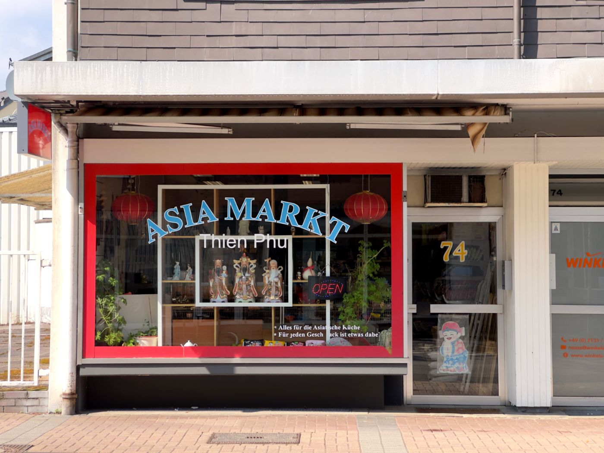

Regulär: Mo bis Fr 9 bis 18, Sa 9 bis 14 Uhr
Alles für die asiatische Küche, mitten in Langenfeld.
Kleiner Laden, große Auswahl. Frische Kräuter, Nudeln, Saucen und Tiefkühlware. Dazu Beratung von jemandem, der die Sachen selbst kocht.

Öffnungszeiten
In Ausnahmefällen sind kurzfristige Schließungen möglich. Rufen Sie bei Fragen gerne an.
Parken
Parkplätze direkt gegenüber.
Stadttarif: bis 15 Min kostenfrei.
Parkvorgang am Automaten starten.
Bezahlen
Karte und Bargeld.
Kein Online-Shop. Alles gibt es nur bei uns im Laden.
Das führen wir
Sechs Bereiche. Die ganze Liste steht im Sortiment.
Frische Kräuter, Gemüse und Tofu
Koriander, Zitronengras, Pak Choi, Ingwer, Tofu
Nudeln und Ramen
SamYang, Mama, Udon, Reis- und Glasnudeln
Saucen und Würzmittel
Soja, Fischsauce, Currypasten, Teriyaki
Tee und Getränke
Grüner Tee, Jasmintee, asiatische Erfrischungen
Snacks und Süßigkeiten
Mochi, Reiscracker, asiatische Süßigkeiten
Tiefkühlprodukte
Garnelen, Muscheln, Gyoza, Fischbällchen
4,4 von 5 Sternen aus 128 Bewertungen bei Google
„Immer freundlich und gut gelaunt! Alle Grundlagen sind da und was er nicht hat besorgt er gerne!“
„Trotz, dass es ein kleiner Laden ist, findet man dort alles, sogar Produkte, die man viel schwerer/kaum findet.“
„Hier bekommt man alles, was man braucht, und der Besitzer ist einfach immer so nett und hilfsbereit.“
Aus unserem Google-Profil. Sternebewertung: Stand 24.09.2026. Ob die Bewertenden bei uns eingekauft haben, prüfen wir nicht nach. Alle Bewertungen bei Google